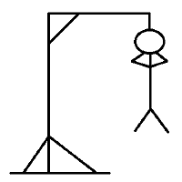
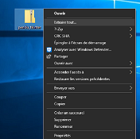
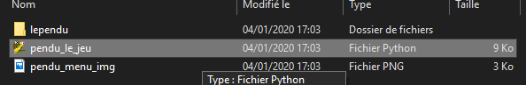

Bienvenue, sur ce site, vous trouverez comment télécharger un jeu du pendu, bien connu de tous.
Ce jeu est programmé en python, à l'aide de l'interface graphique TkInter
Le but du jeu est de trouver toutes les lettres qui composent un mot. Chaque fois que le joueur découvre une lettre présente dans le mot, celle-ci s'affiche. Dans le cas contraire, un dessin de pendu s'affiche. Vous avez donc un nombre de vies à ne pas dépasser. Bonne chance.
Ce jeu fonctionne avec python, ainsi vous devez l'avoir installé sur votre PC avant de commencer. Si vous avez déja PYTHON, vous pouvez passer directement à l'étape 2.
Si vous ne possedez pas python, vous pouvez vous rendre sur ce site : https://www.python.org/downloads/ pour le télécharger.
Pour télécharger notre jeu du pendu, vous pouvez vous rendre dans l'onglet TELECHARGER de notre site. En le téléchargeant vous obtiendrez un dossier ZIP, avant de lancer le jeu, vous devez extraire le dossier :
Sous windows : Clique droit sur le dossier que vous venez de télécharger -> "extraire tout..." (voir image ci-dessous)
Autre méthode : vous pouvez télécharger 7zip qui permet également d'extraire le .zip : https://www.7-zip.org/
Une fois le .zip extrait, vous obtiendrez un dossier, il vous suffit de lancer "pendu_le_jeu.py" (avec python). Une nouvelle fenêtre va alors s'ouvrir, à vous de jouer !
{kind=link}